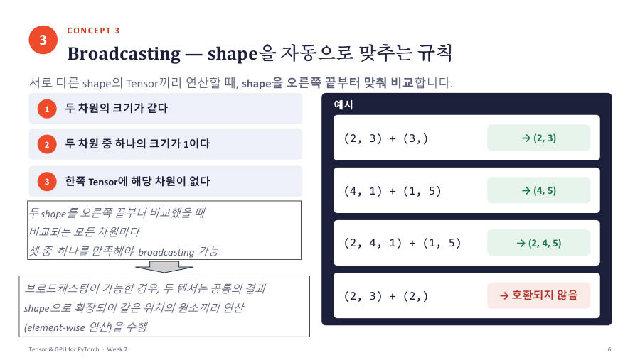

브로드캐스팅 — shape이 달라도 계산되는 규칙 ★★★
shape이 다른 Tensor끼리 계산할 때 PyTorch가 작은 쪽을 자동으로 늘려서 맞춰 주는 기능이 브로드캐스팅(broadcasting)이에요. 늘릴 수 있을 때만 되고, 못 늘리면 에러예요.
두 shape을 오른쪽 끝에 맞춰 놓고 마지막 차원부터 왼쪽으로 하나씩 비교해요. 각 자리가 ① 크기가 같다, ② 둘 중 하나가 1이다, ③ 한쪽에 그 자리가 없다 중 하나를 만족하면 돼요. 모든 자리가 만족해야 해요.

학생 2명에게 각각 간식 3개씩 나눠 주는 표(2×3)가 있어요. 거기에 "1번 간식 +10, 2번 간식 +20, 3번 간식 +30"이라는 한 줄짜리 메모(3,)를 모든 학생에게 똑같이 적용해요. 메모를 학생 수만큼 복사해 붙인 것이 브로드캐스팅이에요.
각 예를 오른쪽 끝에 맞춰 비교해 볼게요.
| 연산 | 오른쪽부터 비교 | 결과 |
|---|---|---|
(2, 3) + (3,) | 3과 3은 같다. 왼쪽 2는 상대에게 없다(OK) | (2, 3) |
(4, 1) + (1, 5) | 1과 5는 한쪽이 1(OK). 4와 1도 한쪽이 1(OK) | (4, 5) |
(2, 3) + (2,) | 3과 2는 같지도 않고 1도 아니다(불가) | 에러 |
(2, 4, 1) + (1, 5) | 1과 5(OK), 4와 1(OK), 2는 상대에게 없다(OK) | (2, 4, 5) |
| 코드 줄 | 무슨 뜻 |
|---|---|
x + bias | (2, 3)과 (3,). bias [10, 20, 30]이 각 행마다 똑같이 더해져요. 1행 [1,2,3]+[10,20,30] = [11,22,33], 2행 [4,5,6]+[10,20,30] = [14,25,36] |
(x + bias).shape | (2, 3) 그대로 |
ones(4, 1) + ones(1, 5) | (4, 1)은 옆으로 5번, (1, 5)는 아래로 4번 늘려서 (4, 5). 모든 값이 1+1 = 2 |
"각 행에 서로 다른 값을 더하고 싶다"면 더할 값을 (4, 1) 모양으로 세워야 해요(수업 실습 3). 그냥 길이 4짜리 한 줄 (4,)을 (4, 3) 표에 더하면, 오른쪽 끝 3과 4를 비교해서 에러예요.
(3, 1)에서 (3,)을 빼면 에러가 아니라 (3, 3)이 나와요. 예측값이 (3, 1)이고 정답이 (3,)이면 loss를 계산할 때 9개 값끼리 비교돼서 엉뚱한 결과가 나와요. 그래서 prediction과 target의 shape을 꼭 같게 맞춰요. 교수님이 7주차에 이 점을 짚었어요.
숫자 하나와의 계산도 브로드캐스팅이에요. 숫자(scalar)는 어디든 맞아서 모든 원소에 똑같이 적용돼요. 시험 샘플 4번의 한 줄이 이 예예요. x는 (10, 2)이고 각 행이 (0,1), (2,3), …, (18,19)예요.
| 코드 줄 | 무슨 뜻 |
|---|---|
x[:, 0:1] | 첫 번째 열을 표 모양 그대로(10, 1). 값은 0, 2, 4, …, 18 |
x[:, 1:2] | 두 번째 열을 (10, 1)로. 값은 1, 3, 5, …, 19 |
2 * x[:, 1:2] | 숫자 2를 모든 칸에 곱해요. (10, 1) 그대로 |
... + 3 | 숫자 3을 모든 칸에 더해요 |
| 결과 y | 행마다 (첫 열) + 2×(둘째 열) + 3. 첫 행은 0 + 2×1 + 3 = 5, 마지막 행은 18 + 2×19 + 3 = 59 |
y.flatten().tolist() | (10, 1) 표를 한 줄로 펴서 파이썬 리스트로. 값은 5, 11, 17, …, 59로 6씩 커져요 |
y의 값이 6씩 커지는 이유는 행이 한 칸 내려갈 때마다 첫 열이 2, 둘째 열이 2씩 늘어나서 2 + 2×2 = 6이 커지기 때문이에요. 이 y는 뒤 장 DataLoader 문제(시험 샘플 4번)의 정답을 구할 때 그대로 쓰여요.
브로드캐스팅은 두 shape을 오른쪽 끝부터 비교하여 각 차원이 같거나 하나가 1이거나 한쪽에 없으면 자동으로 확장하여 원소별 연산하는 기능이다. (2, 3) + (3,)은 가능해서 (2, 3)이 되고, (2, 3) + (2,)는 불가능하다. 문제에서는 두 shape을 오른쪽 끝에 맞춰 적어 보세요.
잠깐 확인 — (5, 1) + (3,)의 결과 shape은?
(5, 3)이에요. 오른쪽 끝 1과 3은 한쪽이 1이라 OK이고, 5는 상대에게 없어서 OK예요. 5×3 표가 돼요.
화면을 가리고 "브로드캐스팅 — shape이 달라도 계산되는 규칙 ★★★"을(를) 친구에게 설명하듯 한 문장으로 말해 보세요. 막히면 위의 빨간 칸만 다시 보고 넘어가요.
자료: 2주차 · Week02_Tensor_and_GPU(pdf, 풀이포함 ipynb) · 빅분02(2주차) 녹취